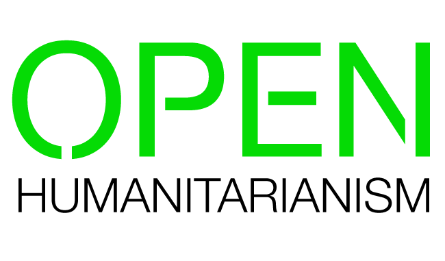
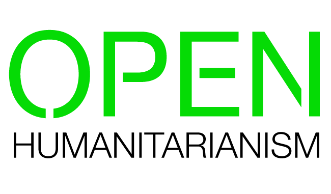

Affected populations and response organizations need accurate and timely information in times of crisis.
Appropriate information, including Open Humanitarian Data, will help affected communities to be reached more quickly and ensure assistance is delivered in a more cohesive and effective manner.
Transparency can also play a key role in tackling corruption and mismanagement. The conditions in the wake of a humanitarian emergency may allow corruption and mistakes to occur, especially in a context of a war zone or failed state, or in the case of a large sudden onset emergency. The diversion of relief supplies or the inequitable distribution of aid, for instance, can marginalize those from the poorest sections of society and deepen existing social conflicts. If the public is enabled to see what is going on within a response, corruption and mismanagement can be better detected, and those in greatest need have the best chance in being reached.
Information held by humanitarian responders is not acquired for the benefit of officials or humanitarian organizations but for the public as a whole. Unless there are good reasons for withholding such information, such as to protect personal privacy or national security, everyone should be able to access it in open data formats and without restrictions on reuse.
Humanitarian organizations operate in a networked age amongst a growing number of physical and virtual responders.
Among those responders can be victims who have organized themselves. Using social media and other accessible platforms, previously voiceless populations can now be empowered actors of their own relief, working with and alongside traditional agencies.
During Typhoon Hagupit in the Philippines in 2014, civilians created a Facebook page where individuals could share information on infrastructure damage, needs, and aid delivery. During Hurricane Sandy, which struck the east coast of the U.S. in 2012, affected populations were able to organize themselves using the Internet and social networks to address specific issues. In Indonesia in 2006, a volunteer network set up a volcano warning system leveraging local radio stations to share accurate information. These examples demonstrate how new types of responders and grassroots assistance present huge opportunities to improve or augment humanitarian response.
By encouraging partnerships and cooperation with groups across all levels – local, national, international and virtual – relief providers can be better positioned to address community needs in times of emergency. Furthermore, decisions can be made in the spirit of common ownership.
Engaging disaster-affected communities is key to an effective humanitarian response.
More and more governments are supporting the active participation of civil society as a way to make decisions that are more in-tune with citizens’ needs and expectations, reducing the likelihood of poor decisions or challenges to those decisions in the future. The same attitude can be taken during humanitarian response.
When humanitarian organizations and public bodies are proactive in the way that they interact with citizens, by establishing multiple channels to gather and share data and information, individuals have the opportunity to join, engage and collaborate in decision-making. Thanks to the rise of mobile connectivity, even the most marginalized and affected can be represented and have influence.
Communication with affected population should be an integral part of every emergency aid programme. Whether through face-to-face meetings, mass media or social networks, communicating and receiving feedback is vital to building trust and understanding. Also, responders are better able to identify and rapidly remedy important gaps in aid when communicating with citizens and listening to their concerns.
Community needs are better met when organizations become accountable to those they aim to serve.
Historically, humanitarian organizations have focused on accountability to their donors, justifying expenditures and evaluating programme results. Because of the nature of aid – in that it is a one-sided transfer of resources – more thought has gone into establishing supply of funding and resources than has gone into developing accountability measures aimed at intended beneficiaries.
However, mechanisms to achieve accountability to affected populations are equally as important to improving humanitarian response. They can help detect mismanagement or corruption ‘on the ground’, rectify the power imbalance inherent in aid between donors and beneficiaries, and empower aid recipients to engage in their own relief efforts.
Becoming accountable to beneficiaries can also be a long-term strategic tool to strengthening democracy and civil society. The actions of humanitarian organizations set an example to follow. By offering affected people the possibility to give feedback, raise concerns and make suggestions in a relief context, communities are encouraged to demand accountability from all those that hold power in other contexts, from the private to the public sector.
This work is licensed under a Creative Commons Attribution 4.0 International License.
Images courtesy of WFP and UN OCHA.